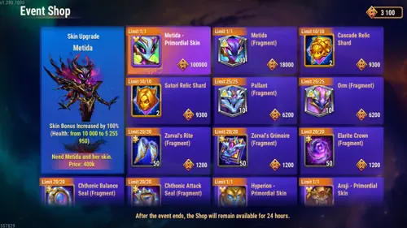
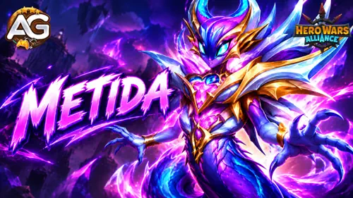

Metida Ancient Awakening Shop Guide for Hero Wars Alliance
- By: Alexandre Domingos. .
Ancient Awakening ? September 2026
Build your Metida shop plan
Soul Stones, rare artifacts, Relic Shards, and the first Titan Skin+. Make every Eternal Mark count toward the upgrades you need.
Compare shop prices →
Eternal Marks ? 1 purchase
High priority for building Metida.
Eternal Marks
A goal to consider for F2P Metida players.
Additional Eternal Marks after the base skin.
500,000 for both steps.
Alexandre's Quick Verdict
Satori Relic Shards: very high priority. Metida Soul Stones and artifacts: high priority. Set aside 100,000 Eternal Marks for the base Primordial Skin if it fits your Metida plan. F2P players should be especially careful with Cascade shards and the much more expensive Skin+ upgrade.
Best Ancient Awakening Shop Priorities
- Very high: Satori Relic Shards. Each pair costs 9,300 Eternal Marks. Budget carefully: all 20 shards cost 93,000.
- High: Metida Soul Stones. One purchase gives 30 for 18,000 Eternal Marks.
- High: Metida weapon, book, and crown artifact fragments. These may take a long time to obtain for free after the event.
- Planned unlock: base Primordial Skin. Reserve 100,000 Eternal Marks if you want to invest in Metida.
- Medium: Cascade Relic Shards. Raise their priority only for a team you are actively building around Cascade.
- Optional: Pallant and Orm Soul Stones, older Super Titan skins, and the expensive Primordial Skin+ depend on your team and budget.
- Leftovers: Summoning Spheres and Elemental Spheres are my preferred remaining purchases.
Ancient Awakening Guides


How to Earn Eternal Marks: Event Missions and Guild VS
Use the blog's Ancient Awakening main-event guide, Firstborn Force missions, and Unstable Equilibrium missions to plan the Eternal Marks needed for your purchases. Claim logins, free attempts, and affordable milestones before spending extra resources.
- Main event: keep Expeditions running, claim Heroic Chest and Outland rewards, and collect the meta rewards for completing branch quests. Trade Route also rewards spending Eternal Marks, so make useful shop purchases instead of buying filler just to advance a stage.
- Firstborn Force: login progress is cumulative; the other seven mission ladders reset daily. Complete affordable Guild Activity, Tower, Titan, Artifact Chest, and Realm boss stages each day. Upgrade a low-level Glyph once for the daily quest's 700 Guild Activity points and use spare equipment in the Guild Equipment Forge.
- Unstable Equilibrium: progress lasts the whole week. There are 91 available stages and the main-event meta ends at 80, so you can skip eleven expensive stages. Use free Arena and Grand Arena attempts daily.
Guild VS overlap: time flexible actions so they advance event missions and earn Guild VS points together. The schedule below follows the blog's event guides. Daily-reset milestones still need attention every day.
| Day | Useful overlap |
|---|---|
| Monday | Summoning Spheres: 1,500 points each. Elemental Spheres: 1,200 each. Realm bosses defeated as Raid Leader: 850 each. |
| Tuesday | Arena and Grand Arena fights: 6,000 points each. Use flexible extra attempts here or on Thursday/Saturday. |
| Wednesday | Energy: 100 points per 3 spent. Artifact Chests: 750 each. Research speed-ups: 200 per minute. Realm Raid Leader boss wins: 850 each. |
| Thursday | Arena and Grand Arena fights: 6,000 points each. |
| Friday | Heroic Chests: 4,000 points each; Outland chests: 2,000; Artifact Chests: 750; Elemental Spheres: 1,200; Realm Raid Leader boss wins: 850. |
| Saturday | Rune Stones: 100 points per 20 spent. Arena and Grand Arena fights: 6,000 each. Qualifying level 6 troop losses against another player: 8 per troop. |
| Sunday | Guild VS has no tasks. Finish remaining event targets and claim rewards before the event ends. |
Monday through Saturday, Tower chests award 4,000 Guild VS points each and starting Expeditions awards 5,000 each. Use free daily opportunities. Use research speed-ups you already own on Wednesday; this overlap does not make buying Realm speed-ups in the event shop worthwhile.
Guild VS points are a separate reward from Eternal Marks. The overlap improves the return on resources you spend on event missions; it does not directly convert those points into shop currency. Firstborn Force also lists Elemental Coins at one Summoning Titans milestone, so keep that currency separate.
Metida Soul Stones: High Priority
Buy 30 Metida Soul Stones for 18,000 Eternal Marks, with a 1/1 purchase limit. This is a high-priority purchase if you are building the new Super Titan.
Metida is a new Elarite Super Titan. She fights in the middle line, and her main stat is Physical Attack. See the complete Metida guide for her skills, artifacts, and team options.
Metida Primordial Skin and the First Titan Skin+
The base Primordial Skin costs 100,000 Eternal Marks. F2P players can aim for this unlock if they plan to invest in Metida and can reach that budget without sacrificing their most important purchases.
After buying the base skin, you can buy Primordial Skin+ for another 400,000 Eternal Marks: 500,000 in total for both steps. That is a very high price. It is mainly a target for spenders, including low spenders who can reach the required budget, and whales. For F2P players, it will be very difficult.
My First Skin-Leveling Priority: Physical Attack
I would start by leveling Metida's Default Skin. At level 60, it gives 196,800 Physical Attack. This improves more than normal damage: several effects from her skills also scale with Physical Attack.
Metida is the first Titan in Hero Wars Alliance with a Skin+. Her Primordial Skin+ gives 5,255,950 Health at level 60, helping her survive longer. It upgrades the Primordial Skin's bonus; it is not an additional separate skin bonus to add on top.
High spenders will probably want the Default Skin and upgraded Primordial Skin at maximum level. If I were F2P or a low spender, I would prioritize Physical Attack and avoid putting all my Titan Skin Stones into Primordial Skin+ immediately. Metida is still new, and we need more time to understand her final place in the meta.

Skills, skins, artifacts, and team options.
Updated: September, 2026.
Satori and Cascade Relic Shards
Each Hero's offer gives 2 Relic Shards for 9,300 Eternal Marks, with a 10/10 limit. Buying all ten offers gives 20 shards for 93,000 Eternal Marks per Hero.
Satori: Very High Priority
Satori Relic Shards are my highest-priority Relic purchase in this shop. Decide how many bundles fit your budget before reserving Marks for Metida's skin and other upgrades.
Cascade: Medium Priority
Cascade shards have medium priority unless you are investing in a Cascade team. F2P players should carefully consider whether those shards are worth giving up Metida items. The full Cascade stock costs almost as much as Metida's base Primordial Skin.
Metida Weapon, Book, and Crown Artifacts: High Priority
The weapon, book, and crown offers each give 50 artifact fragments for 12 Eternal Marks, with a separate 20/20 limit for each artifact. Prioritize the artifacts you need: after the event, obtaining them for free may take a long time.
Pallant, Orm, and Older Super Titan Skins
Pallant and Orm Soul Stones each cost 6,200 Eternal Marks for 10, with a 25/25 limit per Titan. That is up to 250 Soul Stones for 155,000 Marks per Titan. Both are good Titans, but you can build cheaper teams around Metida using Earth, Water, and Fire Titans farmed for free through Dungeon progression.
The Hyperion, Araji, and Eden skins cost 14,000 Eternal Marks each, with a 1/1 limit per skin. The price is good, but you can also unlock each later with 15,000 Titan Skin Stones earned for free. They are optional purchases after your event priorities.
Leftover Eternal Marks and Items to Skip
- Summoning Spheres: 400 Eternal Marks each, limit 100/100. A good use of leftovers because sphere openings often help complete seasonal event missions.
- Elemental Spheres: 600 Eternal Marks each, limit 100/100. Another useful leftover purchase for future event missions.
- Titan Potions and Fairy Dust: buy only if you really lack them for an immediate upgrade. Daily Dungeon and Hydra activities provide free Titan resources over time.
- Realm speed-up items: I would skip them. At the moment, I consider them an unnecessary use of this event's resources.
Save spheres for useful event milestones and matching Guild VS days. Buying spheres does not mean you need to open them immediately.
Metida Ancient Awakening Shop Table
| Item | Per purchase | Limit | Recommendation |
|---|---|---|---|
| Metida Primordial Skin | Base skin for 100,000 | 1 base unlock | Planned unlock for Metida; possible F2P goal |
| Metida Primordial Skin+ | Upgrade for 400,000 after buying the base skin | 1 upgrade | Very expensive; mainly for spenders |
| Metida Soul Stones | 30 for 18,000 | 1/1 | High |
| Satori Relic Shards | 2 for 9,300 | 10/10 | Very high; 20 shards total |
| Cascade Relic Shards | 2 for 9,300 | 10/10 | Medium; higher for a Cascade team |
| Metida weapon artifact fragments | 50 for 12 | 20/20 each | High; slow to obtain for free later |
| Metida book artifact fragments | 50 for 12 | 20/20 each | High; slow to obtain for free later |
| Metida crown artifact fragments | 50 for 12 | 20/20 each | High; slow to obtain for free later |
| Pallant Soul Stones | 10 for 6,200 | 25/25 each | Optional; consider free Dungeon alternatives |
| Orm Soul Stones | 10 for 6,200 | 25/25 each | Optional; consider free Dungeon alternatives |
| Hyperion skin | 1 for 14,000 | 1/1 each | Optional; also unlockable with 15,000 Titan Skin Stones |
| Araji skin | 1 for 14,000 | 1/1 each | Optional; also unlockable with 15,000 Titan Skin Stones |
| Eden skin | 1 for 14,000 | 1/1 each | Optional; also unlockable with 15,000 Titan Skin Stones |
| Summoning Sphere | 1 for 400 | 100/100 | Good leftover purchase |
| Elemental Sphere | 1 for 600 | 100/100 | Good leftover purchase |
| Titan Potions / Fairy Dust | Check in-game offer | Check in-game offer | Only for an immediate shortage |
| Realm speed-up items | Check in-game offer | Check in-game offer | Skip |
Final Recommendation
Give Satori Relic Shards very high priority, secure Metida's 30 Soul Stones and useful artifacts, and plan ahead if you want her 100,000-Mark Primordial Skin. Be selective with Cascade and keep the 400,000-Mark Skin+ upgrade within your actual budget.
For Metida's skin levels, Physical Attack comes first in my plan. Use remaining Eternal Marks on spheres for event missions, buy Potions or Fairy Dust only for a real shortage, and skip Realm speed-ups.
Useful Titan Guides
Metida Shop FAQ
What should I prioritize in Metida's Ancient Awakening shop?
Satori Relic Shards have very high priority. Metida Soul Stones and weapon, book, and crown artifacts have high priority. Plan the 100,000-Eternal-Mark base Primordial Skin around your budget.
How much does Metida's Primordial Skin+ cost?
The base Primordial Skin costs 100,000 Eternal Marks. After buying it, Skin+ costs another 400,000, for 500,000 in total. This is very difficult for F2P players.
Which Metida skin should I level first?
Prioritize the Default Skin for 196,800 Physical Attack at level 60. Primordial Skin+ gives 5,255,950 Health at level 60, but F2P and low spenders should avoid committing all their Titan Skin Stones immediately.
What should I buy with leftover Eternal Marks?
Summoning Spheres cost 400 each and Elemental Spheres cost 600 each, with limits of 100/100. Save them for useful event missions. Buy Titan Potions and Fairy Dust only for a shortage, and skip Realm speed-ups.
Leave Your Opinion!
What is your first priority in Metida's Ancient Awakening shop? Share your Eternal Marks plan, questions, and Titan strategy with the Alexandre Games community.